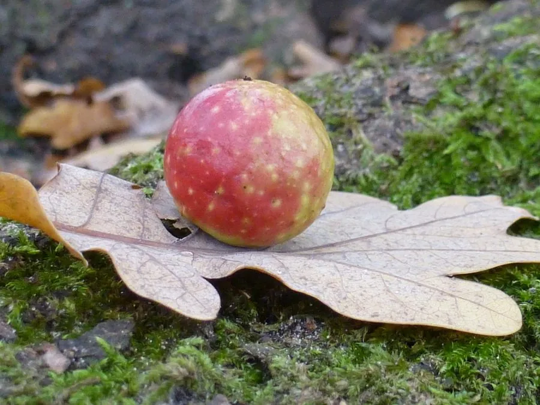

昆虫 · 动物界
瘿蜂 Cynips quercusfolii

在栎树叶上产卵、幼虫分泌物使叶片膨大成球状虫瘿的小型蜂类，体黑褐，在虫瘿内完成发育。
- 分类
- 门节肢动物门纲昆虫纲目膜翅目科瘿蜂科属瘿蜂属
- 栖息环境
- 栎树（橡树）林，虫瘿生于叶片上
- 地理分布
- 欧洲至西亚栎树林，中国北方栎属林区有近缘种
- 保护级别
- 常见种，无保护需求
物种志
瘿蜂的成虫体长约三至四毫米，体黑褐色，体形粗短，腹部侧扁，翅透明而翅脉简单。雌蜂腹部有细长的产卵器，能刺入栎树幼嫩叶片的组织产卵。幼虫无足，乳白色，生活在虫瘿内部的腔室里。虫瘿起初绿色，后转为黄褐或红色，直径可达两厘米，表面光滑如小球。
它分布于欧洲至西亚的栎树林，中国北方栎属林区也有近缘种类，栖息在栎树（橡树）林。幼虫分泌的化学物质刺激叶组织异常增生，把幼虫包裹在球形虫瘿里，幼虫取食瘿内营养组织，老熟后在瘿内化蛹，成虫咬孔钻出。瘿蜂常有世代交替现象，同一物种的春季世代与夏季世代外形差异极大，曾被误定为不同物种。虫瘿也为其他小蜂提供栖身之所，是森林里一个小小的生态单元。
形态与习性
- 体长约三至四毫米，体黑褐粗短
- 产卵产卵器刺入栎树幼叶组织
- 虫瘿球形，直径可达两厘米，由绿转黄褐
- 幼虫无足乳白，在瘿内腔室取食
- 世代交替春、夏世代外形差异极大
- 生态虫瘿可被其他小蜂寄生利用
趣味知识
- 虫瘿不是果实，而是叶片被幼虫分泌物逼出来的异常增生物。
- 同一物种的春夏两代长得完全不像，曾被学者当成两种蜂。
- 一个小小的虫瘿里，往往还住着寄生的其他小蜂，是个微型生态圈。